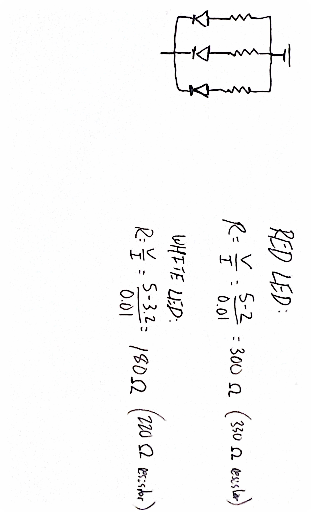
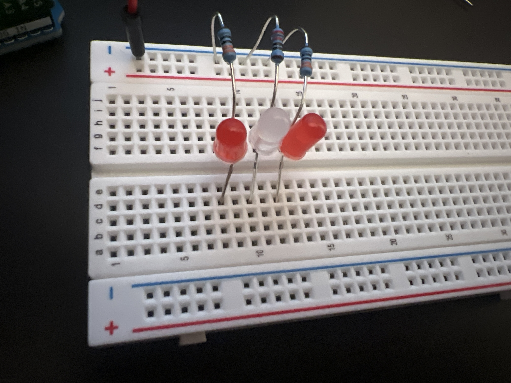
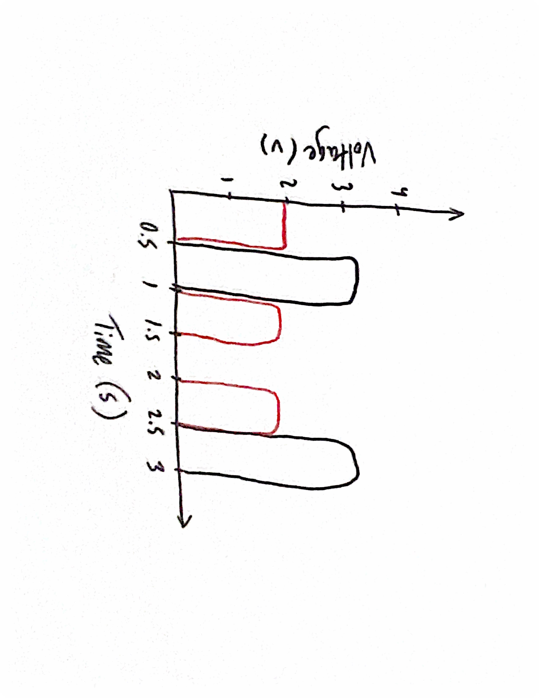
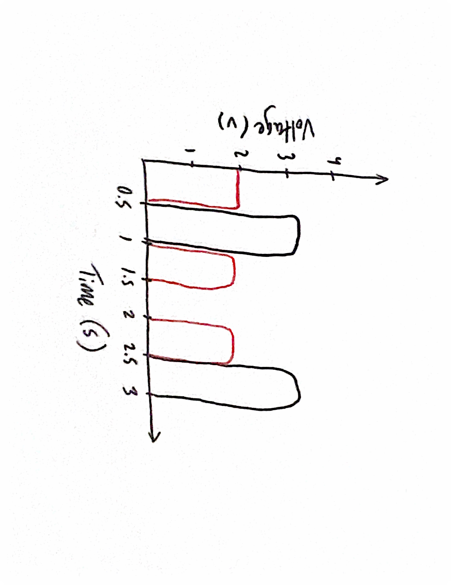

Prompt: Create a circuit with 3 or more LED's where each can blink independently.
Firmware:
// Arduino code for blinking 3 LEDs independently in a sequence
// Define the Arduino digital pin connected to the first red LED
int redLED1 = 8;
// Define the Arduino digital pin connected to the white LED
int whiteLED = 10;
// Define the Arduino digital pin connected to the second red LED
int redLED2 = 12;
// The setup function runs when the program initiates
void setup() {
// Configure the first red LED pin as an OUTPUT
pinMode(redLED1, OUTPUT);
// Configure the white LED pin as an OUTPUT
pinMode(whiteLED, OUTPUT);
// Configure the second red LED pin as an OUTPUT
pinMode(redLED2, OUTPUT);
}
//The loop function will run repeatedly indefinitely
void loop() {
// Turn ON the first red LED
digitalWrite(redLED1, HIGH);
// LED stays on for 500 ms
delay(500);
// Turn LED off and move to next one
digitalWrite(redLED1, LOW);
// Turn ON the white LED
digitalWrite(whiteLED, HIGH);
// LED stays on for 500 ms
delay(500);
// Turn LED off and move to next one
digitalWrite(whiteLED, LOW);
// Turn ON the second red LED
digitalWrite(redLED2, HIGH);
// LED stays on for 500 ms
delay(500);
// Turn LED off and move to next one
digitalWrite(redLED2, LOW);
// Pause before repeating the sequence
delay(500);
}
Schematic & Circuit:

Including the formulas used to calculate the correct resistors per LED

Functioning circuit:
 Additional Questions:
1: Draw a graph where the X axis is time and the Y axis is voltage across the LEDs. Draw a line for each of your 3 LEDs.

2: How many LEDs could you blink independently with your Arduino? How much current would that draw?
14 digital pins x 10 mA, requires 140 mA
3: How fast do you need to blink your LEDs until you no longer can tell that they are blinking?
T = 1/60 = 16.7 ms
4: Did you use AI tools in completing this assignment?
I used generative AI in further understanding how to implement "digitalWrite" and choosing the correct pins.
Additional Questions:
1: Draw a graph where the X axis is time and the Y axis is voltage across the LEDs. Draw a line for each of your 3 LEDs.

2: How many LEDs could you blink independently with your Arduino? How much current would that draw?
14 digital pins x 10 mA, requires 140 mA
3: How fast do you need to blink your LEDs until you no longer can tell that they are blinking?
T = 1/60 = 16.7 ms
4: Did you use AI tools in completing this assignment?
I used generative AI in further understanding how to implement "digitalWrite" and choosing the correct pins.